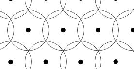

L-type domains and the lattice covering problem
A family of balls of equal radius such that every point belongs to at least one ball is called a covering; its density is the average number of balls to which points belongs to. See below a 2-dimensional covering:

Every lattice determines a partition of the space into Delaunay polytopes. L-type domains are combinatorial type of Delaunay tesselations of the Euclidean space. When, one knows the Delaunay polytopes of a lattice, it becomes possible to compute its covering density, i.e. the density of a covering of space with balls centered on the lattice. Using semidefinite programming one can optimize the covering density over a L-type and solve the lattice covering problem in a fixed dimension, if one knows all the L-type domains. In practice this is possible only up to dimension 5. Using a generalization of L-type, we were able to find record lattice coverings in dimension 9 to 15 and to classify the totally real thin algebraic number fields.
L A. Schuermann, M. Dutour Sikirić, F. Vallentin, A generalization of Voronoi's reduction theory and its application, Duke Math. J. 142 (2008), 127--164.